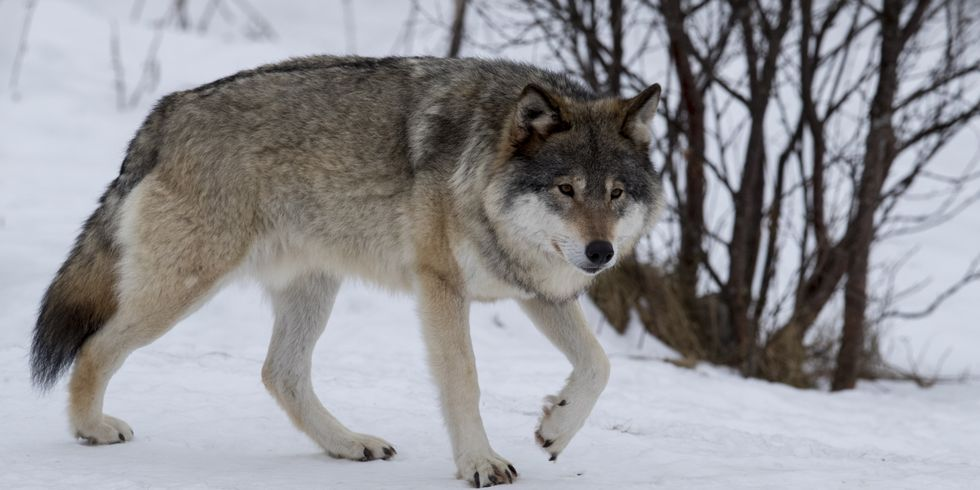
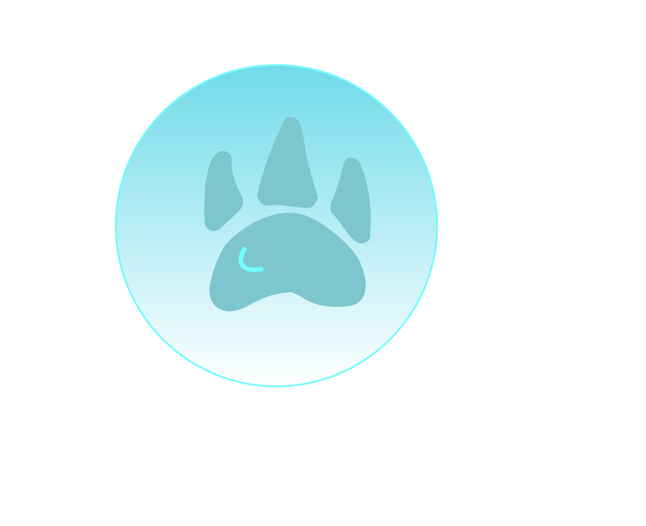

<!DOCTYPE html>
<html lang="en">
<head>
    <meta charset="UTF-8">
    <meta name="viewport" content="width=device-width, initial-scale=1.0">
    <meta http-equiv="X-UA-Compatible" content="ie=edge">
    <link rel="stylesheet" type="text/css" href="css/style.css">
    <title>Document</title>
</head>
<body>
    <!-- Denna fil skall alltid heta index.html och är den första filen på en hemsid -->
    <script src="js/script.js"></script>
</body>
</html>

<div id ="container">
<header><h1> ROVDJUR</h1></header>


<nav> 
    
<button> <a href= "varg.html">varg</a></button>
<button> <a href= "bjorn.html"> bjorn</a></button>
<button> <a href= "ad.html"> andra djur</a></button>
    


</nav>

<main> 
    
     
   

</main>
<aside> Det som utmärker rovdjuren är deras specialiserade tänder, rovtänder, som tillsammans bildar en kraftig sax för styckning av till exempel kött. Trots namnet innehåller ordningen rovdjur även arter som är helt växtätande, som jättepanda, eller delvis insektsätande, som jordvarg och öronhund.

        Landlevande rovdjur finns på alla kontinenter utom Antarktis (säldjur finns även där) och i alla typer av miljöer. Beroende på bland annat de olika livsmiljöerna varierar rovdjurens storlek, från småvesslans 25-130 gram till sjöelefantens 2 000 kg. 
        
        Rovdjurens ursprung går tillbaka till slutet av krita, för cirka 70-65 miljoner är sedan. Under historiens gång har många rovdjur utvecklats från trädlevande, klättrande former till marklevande och snabblöpande. De nutida större hunddjuren, till exempel varg, har en särställning i rovdjurens utveckling genom sin sociala natur och anpassning till snabb jakt i flock.</aside>
<footer>   </footer>

</div>

<nav>
    </nav>
</nav>


